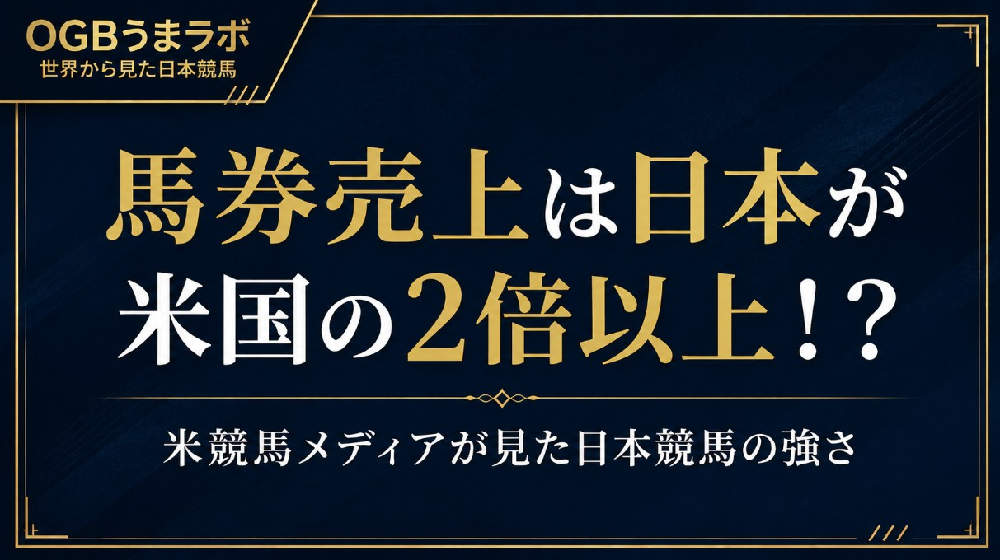

馬券売上は日本が米国の2倍以上！？
米競馬メディアが見た日本競馬の強さ
米国の競馬メディア、Thoroughbred Daily Newsが6月22日付で、米国競馬の構造問題についてかなり踏み込んだ記事を出しています。
テーマは、#米国競馬 の馬券売上と、競馬ビジネスとしての持続性。
その中で比較対象、そして成功例として出てきたのが、#日本競馬 です。
記事では、2025年の米国競馬の馬券売上は約118億ドルとされています。
一方、日本競馬については、馬券売上250億ドルと紹介。
単純に数字だけを見ると、日本の馬券売上は米国の2倍以上です。
しかも、記事内で示されているレース数と馬の数を見ると、さらに興味深い比較になります。
日本は、23,000頭で21,000レース。
米国は、42,000頭で33,000レース。
つまり、米国の方が馬も多く、レース数も多い。
それでも #馬券売上 は、日本の方が2倍以上大きい。
ただ、元記事の中心は、そこだけではありません。
Thoroughbred Daily Newsがまず問題にしているのは、米国の馬主経済です。
記事によると、2025年の北米競馬の賞金総額は13億8000万ドル。
一見すると大きな金額に見えます。
しかし、そこから調教師の取り分、騎手への支払い、登録料、ノミネーション料など、馬をレースに出すためのコストが引かれます。
その結果、実際に馬主側へ分配される金額は、約9億6600万ドルと試算されています。
一方で、2025年に出走した42,674頭を、1頭あたり年間4万ドルで維持すると、年間コストは約17億1000万ドル。
つまり、米国の馬主は全体として、賞金だけでは大きな赤字になる構造です。
元記事は、この不足分を約7億4000万ドルとし、さらに馬の購入費はそこに含まれていないと指摘しています。
ここが重要です。
米国競馬は、レース数も馬の数も多い。
賞金総額も大きく見える。
それでも、馬主が賞金だけで成り立つ構造にはなっていない。
そのうえで、Thoroughbred Daily Newsは日本との比較に入ります。
この点について、記事はこう書いています。
“The difference is not the size of the population. It is the structure.”
「違いは馬の数ではない。構造である」
これはかなり面白い指摘です。
日本の競馬ファンから見ると、JRAと地方競馬は別物として見えます。
中央と地方では売上規模も、開催形態も、ファン層も違います。
ただ、米国側から見ると、日本競馬は中央・地方を含めて、馬券発売、開催設計、番組、ファン導線が比較的まとまった競馬システムとして映っているのかもしれません。
一方の米国は、30を超える管轄に分かれ、州ごと、競馬場ごとに構造が違います。
レース数は多い。
馬の数も多い。
賞金も大きく見える。
でも、馬券売上や競馬ビジネスとしての効率では、日本のように回っていない。
記事が言いたいのは、単に「日本競馬はすごい」という話ではありません。
米国競馬は、馬の数やレース数を増やせば解決する段階ではなく、競馬そのものをどう設計し、どう見せ、どう馬券商品として成立させるかという、構造の問題に直面している。
その中で日本競馬は、より少ない馬とレース数で、これだけ大きな馬券売上を生んでいる成功例として見られているわけです。
これは、かなり大きな話だと思います。
日本競馬は、世界的に見ても馬券売上が非常に大きい市場です。
ただ、その強さは単にファンの数だけではなく、開催日程、発売システム、ネット投票、中央と地方の関係、重賞体系、メディア露出、そして馬券を買う習慣まで含めた構造によって支えられています。
米国メディアが日本競馬を見た時に、注目しているのは、個々の名馬や遠征馬だけではありません。
競馬というビジネス全体の仕組みです。
日本馬が海外で勝つ。
日本の種牡馬が評価される。
日本の生産界が注目される。
そうした話はよくあります。
でも今回は少し違います。
米国競馬が自分たちの課題を考える中で、
「なぜ日本競馬は、より少ない馬とレース数で、米国の2倍以上の馬券売上を生んでいるのか」
という成功モデルとして日本を見ている。
これは、世界から見た日本競馬のかなり面白い一面だと思います。
皆さんはどう見ますか？
日本競馬の強さは、馬のレベルなのか。
馬券文化なのか。
それとも、競馬を成立させる構造そのものなのか。
26.6.23
うまラボ編集部